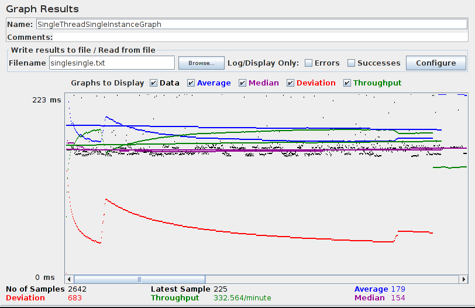
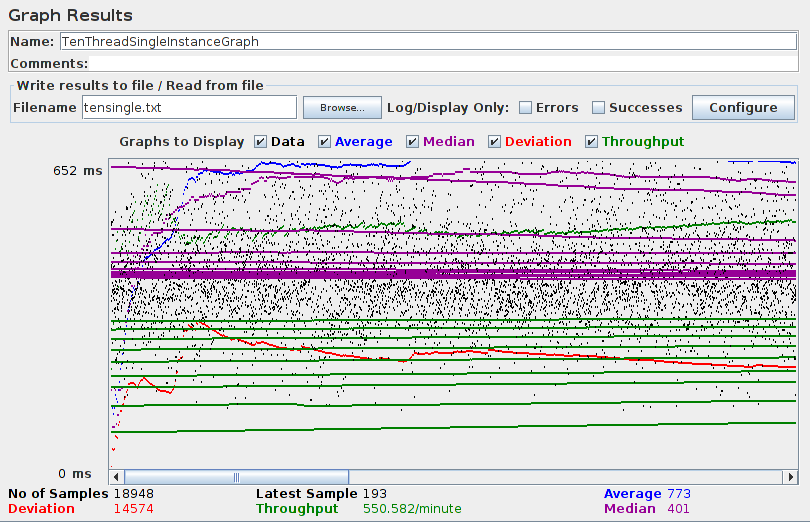
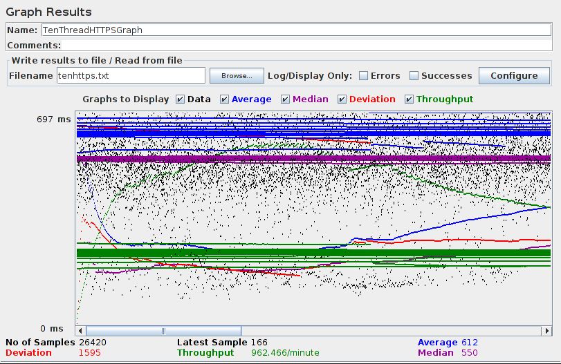
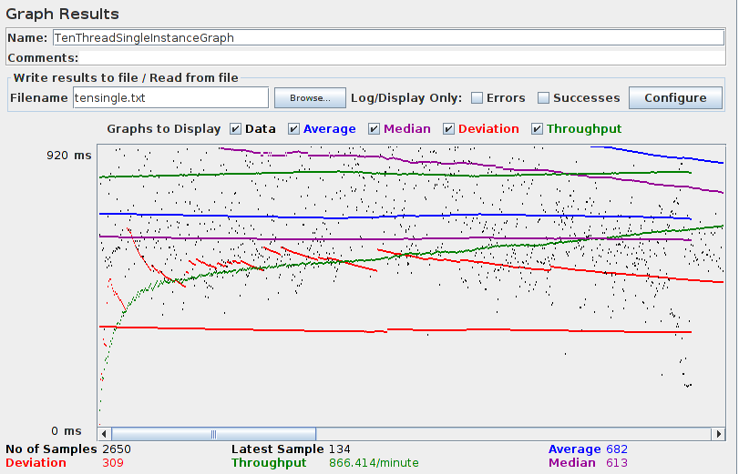
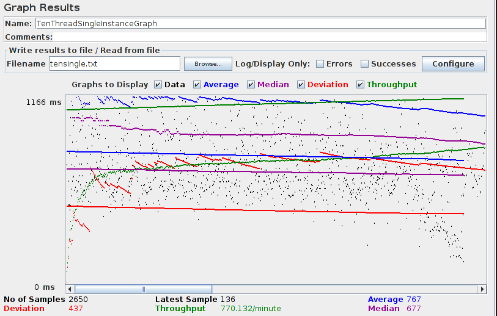

| Single-instance version cases |
Graph Results Screenshot |
Average Query Time(ms) |
Average Search Servlet Time(ms) |
Average JDBC Time(ms) |
Analysis |
| Case 1: HTTP/1 thread |
 |
152 |
64.05431153785011 |
61.883862696063586 |
If there's only a single user, this seems the fastest. |
| Case 2: HTTP/10 threads |
 |
695 |
561.9253553422642 |
552.2557558403773 |
Slower due to multiple users. |
| Case 3: HTTPS/10 threads |
 |
702 |
567.5020188135849 |
564.0815093041509 |
Overhead of HTTPS is minimal. |
| Case 4: HTTP/10 threads/No prepared statements |
 |
682 |
569.1595583320755 |
565.185397125283 |
Slightly slower on the backend, but not a bottleneck of the system. |
| Case 5: HTTP/10 threads/No connection pooling |
 |
767 |
653.893960.68 |
650.1646190343397 |
Slower due to not sharing connections. |